Обзор новых инструментов в Corel Photo-Paint X7
Можно сказать, что впервые за последних несколько лет, разработчики почтили своим вниманием Photo-Paint. По сравнению со своим старшим братом – CorelDraw, Photo-Paint часто оставался «нелюбимым ребенком» и количество новшеств было минимальным или их не было вообще. В Corel Photo-Paint X7 нововведений гораздо больше, чем в предыдущих версиях. Хотя каждый пользователь по своей натуре человек ненасытный, то хотелось бы, чтобы новых возможностей было еще больше, тем более, что в Photo-Paint простора для совершенствования более чем достаточно. Начнем теперь наш краткий обзор новинок.
1. Первое любопытное новшество – инструмент Planar Mask (Планарная маска). Несмотря на то, что идея создания такого инструмента достаточно интересна, но возможностей этот инструмент предоставляет не так уж и много. Идея заключалась в том, чтобы одним махом создать маску с полностью редактируемой областью в середине и по мере приближения к периферии выделенной части изображения, менялась «защищенность» выделенного пространства. Визуально это выглядит так, что в центральной части выделенной области, изменения проявляются полностью, а по мере приближения к границам области, изменения понемногу затухают.
Чтобы лучше понять, о чем я только что сказал, давайте разберем «по косточкам» этот инструмент.
Но прежде, чем мы перейдем к хорошему, скажем о главном недостатке этого инструмента. Он может создавать только выделенные области прямоугольной формы. На мой взгляд, это большой минус, т. к. в большинстве случаев маска имеет произвольную форму.
Но обо всем по порядку.
Как и положено, инструмент Planar Mask (Планарная маска) находится в группе инструментов выделения. Ему присвоена горячая клавиша – 8 (цифра восемь не на цифровой клавиатуре). Как только вы активизируете данный инструмент, как тут же в окне изображения появится маска (рис. 1).
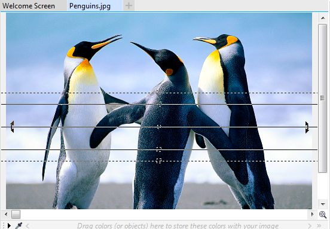
Довольно любопытна работа с этим инструментом. Если выберите этот инструмент, вы увидите маску, как на рис. 1. Если вы тут же переключитесь на любой другой инструмент – маска исчезнет, т. е. она не будет создана. Еще любопытная особенность – если вы после выбора инструмента Planar Mask (Планарная маска) щелкните в любой области окна изображения, маска будет создана, хотя четыре линии для настройки маски и маркеры вращения никуда не исчезнут и можно интерактивно ее настроить. Что меня немного смущает (а может я чего-то еще не знаю), так это механизм применения маски. Что я имею ввиду. В обычных инструментах выделения, после создания выделенной области, маска появляется сразу в окончательном (готовом) виде. В случае с инструментом Planar Mask (Планарная маска) не все так просто. Чтобы после выполнения всех настроек, был создан окончательный вид маски, необходимо переключиться на любой другой инструмент. Логично было бы предусмотреть на Панели свойств этого инструмента кнопку Apply (Применить), либо чтобы результаты окончательной настройки маски «фиксировались» нажатием клавиши Enter, например. Однако ничего такого в этом инструменте не предусмотрено.
Настройка маски реализована максимально удобно для пользователя. И хотя на всех четырех линиях (см. рис. 1) имеются квадратные маркеры для изменения размеров, можно потянуть за линию в любом месте. Также независимо друг от друга регулируются размеры полностью редактируемой и частично защищенной области. Промежуток между сплошными и пунктирными линями образует некую область перехода от полностью редактируемой до полностью защищенной области. В случае необходимости, размеры этих областей можно задавать точно с помощью элементов управления на Панели свойств (рис. 2).
Кнопки на Панели свойств уже знакомы нам из предыдущих версий, а назначение счетчиков интуитивно понятны. Первый из них задает размеры полностью редактируемой области, ограниченной сплошными линиями, а второй угол наклона. Последний счетчик – Feather range (Диапазон растушевания) задает размеры «переходной области», ограниченной пунктирными линиями. Давайте посмотрим, как действует этот инструмент на коротком примере. В качестве исходного изображения будем использовать фотографию с пингвинами, как на рис. 1. Создадим маску, рис. 3.
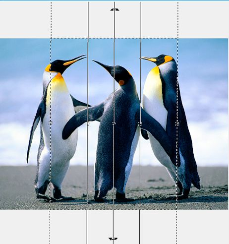
Применим к этому изображению размывку по Гауссу с значением Радиус = 6 (рис. 4).
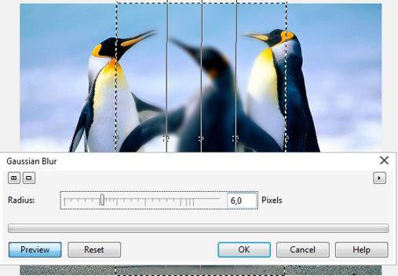
На рис. 4 отчетливо виден результат работы инструмента Planar Mask (Планарная маска). А чтобы был более понятен «механизм», как это работает, можно переключиться в режим Paint on Mask (Рисовать по маске) (рис. 5), нажав Ctrl + K.
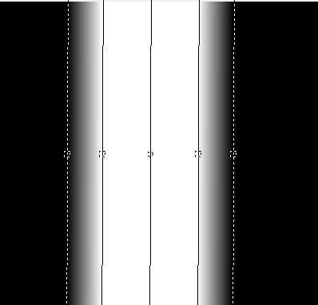
2. Следующее новшество в Corel Photo-Paint X7, это новый тип размывки – Bokeh Blur (Боке). Этот новый фильтр преследует ту же цель, что и инструмент Planar Mask (Планарная маска) – сфокусировать внимание на определенном участке изображения. Все из нас видели этот распространенный нынче прием – небольшое размытие заднего плана, либо плавное размытие изображения по бокам от какой-то главной части изображения. Хотя Photo-Paint и раньше мог без проблем справиться с такими задачами, тем не менее, новый фильтр облегчил создание такого рода эффектов.
В окне фильтра Bokeh Blur (Боке), можно увидеть совет, где рекомендовано создать маску перед применением фильтра. Если этого не сделать, то этот фильтр работает аналогично размывке по Гауссу. Окно самого фильтра показано на рис. 6.
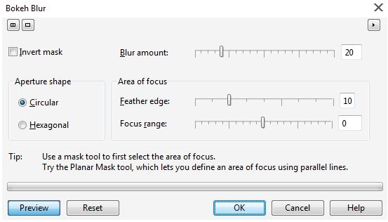
Работает этот фильтр весьма замысловато. Если мы последуем совету и создадим маску с помощью инструмента Planar Mask (Планарная маска), а затем применим фильтр Bokeh Blur (Боке), то результат будет обратным, чем в случае размывки по Гауссу. Чтобы понятно было о чем я говорю, посмотрите на рис. 7.
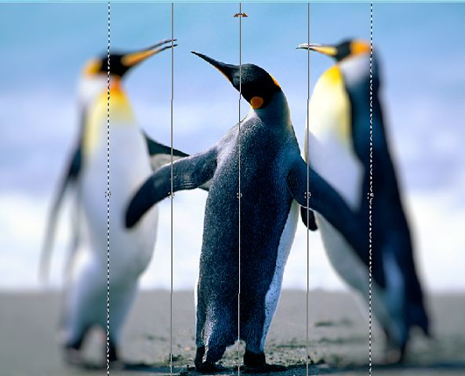
Сравнив рисунки 4 и 7, становится поянта разница. Если в случае с размывкой по Гауссу, была размыта область между сплошными линиями, то при применениии фильтра Bokeh Blur (Боке), размылась область снаружи от пунктирных линий. Чтобы получить одинаковые результаты, в окне фильтра Bokeh Blur (Боке) необходимо установить флажок Invert Mask (Обратить маску).
Рассмотрим влияние элементов управления в окне фильтра на получаемый результат. В качестве примера будем использовать показанное на рис. 7 изображение с пингвинами.
Верхний ползунок Blur amount (Степень размытости) отвечает за размывку области за пределами пунктирных линий. Большие значения Blur amount (Степени размытости) соответствуют большей степени размытия.
Ниже расположена область Area of focus (Область фокусировки) с двумя ползунками. Первый ползунок – Feather edge (Растушевать края) работает довольно замысловато. Согласно справке, при перемещении ползунка вправо, увеличивается размытие. Посмотрим, так ли это. На рис. 8 показано изображение и созданная прямоугольная маска. К изображению было применено размытие с помощью фильтра Bokeh Blur (Боке), в котором были оставлены значения параметров по умолчанию.
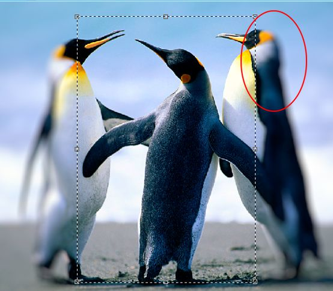
Значение Feather edge (Растушевать края) по умолчанию равно 10. Кружком обведена переходная область размытия. Теперь увеличим значение Feather edge (Растушевать края) до максимума, т. е. до 40 (рис. 9).
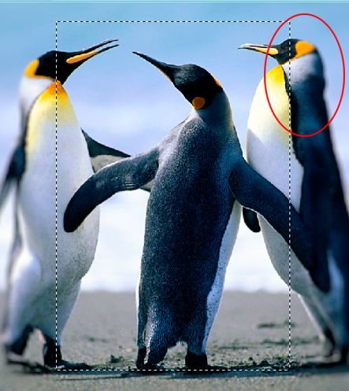
Сравнивая результаты на рис. 8 и 9, напрашивается вывод, что этот параметр работает совсем наоборот, точнее говоря, в справке закралась ошибка. На самом деле нужно было бы наверно сказать, что увеличение значения Feather edge (Растушевки края) приводит к увеличению размера переходной области размывки, а как результат и само размытие в этом случае становится меньше (менее заметным).
Ну, а ползунок Focus range (Диапазон фокусировки) работает согласно определению, увеличение значения приводит к увеличению зоны фокусировки (области четкого изображения), а уменьшение значения – к сокращению этой зоны. Сам же диапазон (зона фокусировки) располагается снаружи маски, т. е. эта зона «съедает» часть переходной области.
Наибольшее количество новшеств в новой версии появилось в группе фильтров Camera (Камера). Сейчас мы познакомимся с этими фильтрами ближе.
3. Первый новый фильтр в этой группе – Colorize (Цветность). Я бы сказал, что этот фильтр чем-то напоминает фильтр Photo Filter (Фотофильтр), но более продвинутый. Окно фильтра показано на рис. 10.
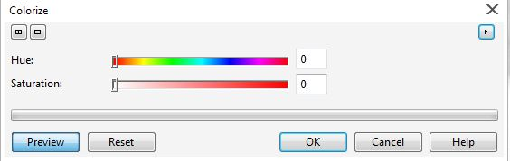
В отличие от Photo Filter (Фотофильтра), здесь цвет задается ползунком Hue (Оттенок), а его насыщенность, ползунком Saturation (Насыщенность). При значениях параметров равных 0, получаем изображение в оттенках серого.
4. Второй новый фильтр – Sepia Toning (Сепия). Здесь все очень просто. Название фильтра однозначно определяет назначение и эффект от применения этого фильтра. Окно фильтра показано на рис. 11.
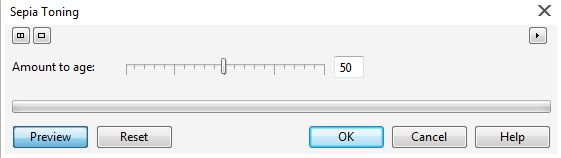
Единственный ползунок Amount to age (Соответствие возрасту), определяет степень проявления эффекта. И хотя данный фильтр дает хорошие результаты, для получения реалистично состарившегося фото необходимы дополнительные действия, т. к. известно, что в старых фотографиях имеется множество дефектов, а не только эффект выцветания и пожелтения бумаги.
5. Третий новый фильтр – Time Machine (Машина времени). Вообще-то говоря, этот фильтр можно в каком-то смысле назвать – хорошо забытое старое. Если вы поклонник всех продуктов Corel, а не только CorelDraw Graphics Suit, то должны помнить довольно любопытный продукт от компании Corel – PhotoAlbum (если мне память не изменяет, то именно так он назывался). В этой программе и была реализована «Машина времени». Даже бегло просмотрев окно фильтра (рис. 12), становится ясно, что этот фильтр эмитирует стили фотографии разных эпох.
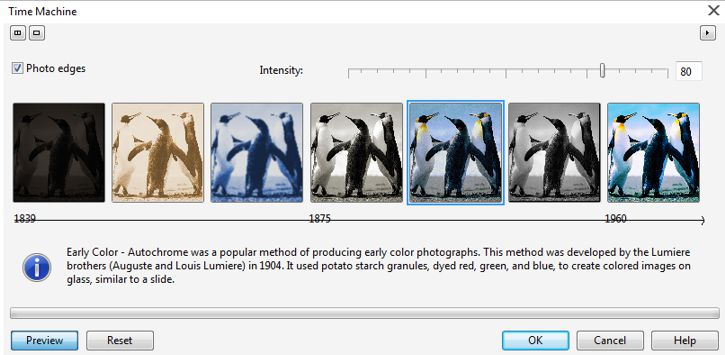
Интенсивность проявления эффекта задается одноименным ползунком, Intensity (Интенсивность). Для любителей всевозможных рамочек, предусмотрен флажок Photo edges (Края фотографии). Если предложенная программой рамочка вас не устраивает или не нужна вовсе, нужно сбросить этот флажок.
Хотя на первый взгляд, фильтр дает незамысловатые эффекты, иногда можно получить оригинальные результаты, применяя фильтр к дубликату изображения (объекта), разместив его поверх оригинала, в сочетании с различными режимами наложения.
6. Следующая новинка в Photo-Paint Х7 – группа инструментов Liquid Tools (Инструменты размытия) на панели Toolbox (Набор инструментов). В эту группу вошло четыре новых инструмента. Разберем их по порядку.
Первый инструмент в группе – Liquid Smear (Жидкий мастихин). Панель свойств этого инструмента показана на рисунке 13.
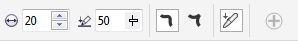
Честно говоря, я не совсем понял смысл ввода этого инструмента в новую версию, т. к. такой же результат можно получить с помощью инструмента Effect (Эффект). Но раз уж его добавили в Photo-Paint, никуда от этого факта не денешься. Набор элементов управления весьма скромный и практически одинаковый для всей этой группы инструментов. Первый элемент управления – счетчик Nib size (Радиус кончика) служит для задания размера кисти. Второй элемент управления – Pressure (Нажим) управляет степенью проявления эффекта. Два следующих элемента управления в виде кнопок определяют остроту кончика деформированного участка изображения. К сожалению нет возможности изменить форму кисти, она всегда будет иметь круглую форму. Об этом же свидетельствует и докер Brush Settings (Настройки кисти) для этого инструмента) (рис. 14).
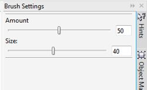
Второй инструмент этой группы – Liquid twirl (Жидкая воронка). Глядя на результат работы этого инструмента, я бы назвал его «Жидкое завихрение» или как-то так. Довольно занятный инструмент.
Вообще, должен заметить, что эти инструменты чем-то напоминают некоторые эффекты из набора Corel KPT Collection. Кстати, в моем случае этот набор плагинов не встроился в Photo-Paint Х7. Возможно из-за того, что у меня Photo-Paint (64-bit).
Чтобы получить нужный результат, необходимо повозиться для освоения этого инструмента. Если просто удерживать нажатой левую кнопку мыши (не перемещая при этом саму мышь), то получится обычное завихрение. При этом можно наблюдать это завихрение «в движении» (если можно так выразиться). Если же одновременно перемещать мышь, то получится нечто похожее на «растянутое завихрение» в направлении перемещения мыши. Панель свойств этого инструмента показана на рис. 15.
Здесь традиционно первым элементом управления является счетчик Nib size (Радиус кончика). Следом за ним находится элемент управления Rate (Скорость), определяющий скорость закручивания. И естественно две кнопки задающие направление закручивания, по и против часовой стрелки.
На величину закручивания влияет не только скорость, но также и размер кисти. При правильном подборе комбинации значений этих параметров, можно получить нужный эффект.
Хотя навскидку сложно придумать где этот эффект применить с максимальной пользой, однако кое-что приходит на ум практически сразу.
На рис. 16 показана часть исходного изображения.
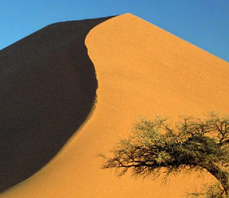
Предположим, мы хотим частично изменить форму этой дюны. С помощью Liquid twirl (Жидкая воронка) это можно сделать довольно просто (рис. 17).
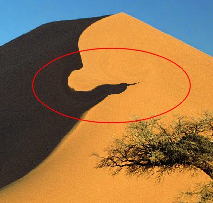
Для получения такого результата, потребовалось уменьшить значение Rate (Скорости) и менять направление закручивания. Плюс к этому медленно перетаскивать мышь во время закручивания. Я думаю, что часто будет возникать необходимость в коррекции некоторых завихренных участков, чтобы немного «выровнять или сгладить» их. Это можно иногда подправить с помощью Liquid Smear (Жидкого мастихина).
Как заявлено в разделе What’s New (Что нового), новинкой в Photo-Paint Х7 является возможность интерактивного изменения прозрачности. На самом деле такая возможность имеется и в Photo-Paint Х6, по крайней мере в версии 16.3.0.1114. Почему я заговорил об этом только сейчас? Честно говоря долго думал, написать об этом или нет, раз уж это было в предыдущей версии. Но, т. к. я в свое время не описывал новинок в Photo-Paint Х6, то думаю будет не лишним об этом сказать.
Речь идет о возможности интерактивно менять значения параметров, не прибегая к Панели свойств. Такая возможность хоть и была заявлена только к прозрачности, на самом деле интерактивно можно менять не один параметр. В разных инструментах, эти параметры свои. О возможности такой интерактивной настройки говорит Строка состояния в Photo-Paint, на которую обычно никто не смотрит.
Например, для изменения значения Rate (Скорость), необходимо удерживать нажатой клавишу Alt. При этом появится небольшая шкала (рис. 18).
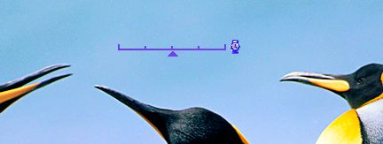
Перемещая ползунок в виде маленького треугольника, можно изменить значение Rate (Скорости).
А вот в инструменте Paint (Кисть), например, таким образом можно изменить Прозрачность кисти, а с одновременным нажатием Ctrl + Alt, настроить мягкость кисти. При перемещении маленького треугольничка вдоль шкалы, вы можете наблюдать изменение значений в соответствующих счетчиках. Это помогает знать точно, насколько изменяется параметр.
Следующий новый инструмент в этой группе – Liquid attract (Жидкое притягивание). Аналогично другим инструментам этой группы, этот инструмент предназначен для интерактивного искажения изображения. Название инструмента достаточно точно определяет его действие. Его с успехом можно использовать при создании некоторых видов абстракций. Панель свойств Liquid attract (Жидкого притягивания) аналогична с инструментом Liquid twirl (Жидкая воронка), за исключением конечно кнопок направлений искажения по и против часовой стрелки.
Т. к. Liquid attract (Жидкое притягивание) должно что-то «притягивать», то посмотрим где это можно применить. Хотя на самом деле, это притягивание визуально часто выглядит, как сжатие изображения.
Рассмотрим короткий пример. На рис. 19 показана часть исходного изображения.
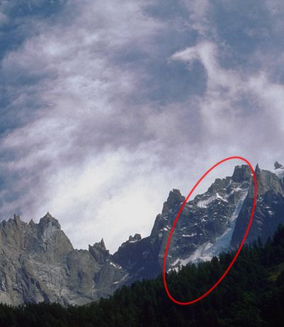
Я обвел красным кружком ту часть, над которой мы будем экспериментировать. Предположим, что вы хотите убрать или уменьшить часть горы, занесенную снегом. С помощью Liquid attract (Жидкого притягивания) это сделать проще простого. Нужно лишь уменьшить значение параметра Rate (Скорость). Результат показан на рис. 20.
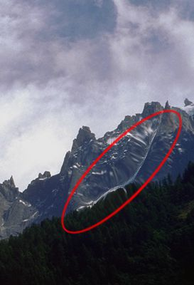
И наконец, последний инструмент этой группы – Liquid repel (Жидкое отталкивание). Этот инструмент работает с точностью до наоборот, по сравнению с инструментом Liquid attract (Жидкое притягивание). Он чем-то напоминает работу некоторых фильтров из группы 3D Effects. Также он чем-то мне напомнил линзу в CorelDraw – Рыбий глаз.
Конечно, как и в большинстве случаев, приходится проявить некоторую фантазию, чтобы «выжать по максимуму» пользу от этого инструмента. Ну и традиционно, для получения чего-то интересного необходимо привлекать дополнительные инструменты Photo-Paint. Тут я предлагаю рассмотреть «микроурок», где мы рассмотрим в действии некоторые новинки Photo-Paint Х7.
На рис. 21 показано исходное изображение автомобиля.
Оригинальное изображение было намного больше и большего разрешения, поэтому пришлось его обрезать и сделать скриншот. Наша задача изменить колесо автомобиля. Т. к. остальная часть нас в данном случае не интересует, то в последующих рисунках я буду делать скриншоты колеса, чтобы было лучше видно ход действий. Для примера займемся мы передним колесом.
Сначала выделим с помощью Ellipse Mask (Эллиптической маски) обод колеса (рис. 22).
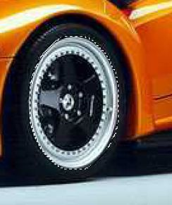
Теперь переключимся на инструмент Liquid repel (Жидкое отталкивание). Размер кисти я выбрал больше выделенной области (рис. 23), а значение Rate (Скорость) уменьшил до 11.
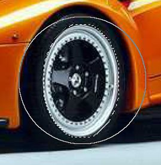
Получим результат, как на рис. 24. Тут нужно лишь правильно уловить момент, когда отпустить кнопку мыши.
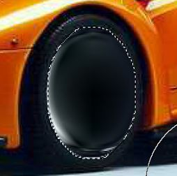
Далее применим градиентную заливку к выделенной области. Переключимся на инструмент Fill (Заливка). Я использовал заливку, которую сделал сам и которая описана в предыдущем уроке. Я ее тогда сохранил в виде заготовки. В диалоговом окне Edit Fill (Изменить заливку) нажмем кнопку Repeat and mirror (Повторить и отразить). Настройки в окне Edit Fill (Изменить заливку) показаны на рис. 25.
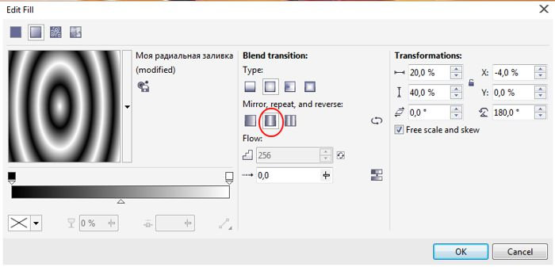
Получим в итоге такую картинку (рис. 26).
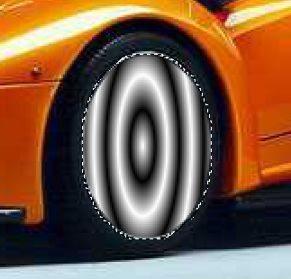
Теперь снова применим Liquid repel (Жидкое отталкивание) с теми же настройками и получим конечный результат (рис. 27).
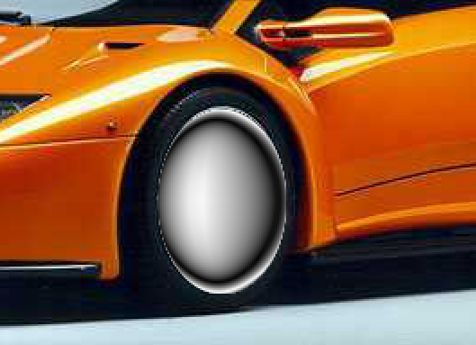
Получаем в итоге совершенно новый обод. Конечно, по идее нужно было бы создать что-то более «крутое», но в этом «микроуроке» я лишь хотел показать некоторые возможности, которые нам предоставляют новые инструменты в Photo-Paint.
7. Довольно специфичным новшеством в Photo-Paint Х7 явилось появление выравнивающих направляющих. Учитывая их реализацию в Photo-Paint, назвать это чем-то очень полезным весьма трудно. Включение этих направляющих, как и следовало ожидать, находится в меню View (Вид). Эти направляющие появляются только по середине изображения и по его краям. Недостатком этих направляющих является их отображение. Они настолько мало заметны, что иногда можно их сразу и не увидеть, настолько бледные и тонкие эти направляющие. Я скорее всего не ошибусь, если скажу, что вы наверно никогда использовать эти направляющие не будете. А вот пожалуй очень приятным усовершенствованием в Photo-Paint Х7 стала возможность создавать наклонные направляющие. Раньше этого сделать было нельзя.
Создаются направляющие, как и раньше, с помощью линеек. Однако при выделении направляющей, теперь появляется соответствующая Панель свойств (рис. 28).
Управлять направляющими можно в двух режимах, за которые отвечают две кнопки. Для перемещения направляющей необходимо щелкнуть на кнопке Position (Положение) на Панели свойств. Эта кнопка активна по умолчанию. Для вращения направляющей нужно на ней щелкнуть еще раз или нажать кнопку Rotate (Вращение) на Панели свойств. Самое простое переключение между этими двумя режимами – щелчок мышью на направляющей. При обычном перемещении, элементы управления отвечающие за режим вращения неактивны.
Назначение двух кнопок следующих за счетчиками вполне очевидно. Первая из них, Snap to guidelines (Привязывать к направляющим) служит для привязки, а вторая – Lock guidelines (Блокировать направляющие) для фиксации положения направляющей. Возможность привязки к направляющей придется весьма кстати, когда нужно провести ровную линию. Появление наклонных направляющих в Photo-Paint, будет полезно в некоторых случаях, когда необходимо придать объекту нужную перспективу. В этом случае направляющая будет служить отличным ориентиром.
Photo-Paint Х7 также обзавелся новыми докерами – Align Guides (Выравнивающие направляющие) и Guidelines (Направляющие) (рис. 29).
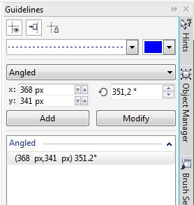
Опции в этом докере аналогичны находящимся на Панели свойств, но дополнительно к этому можно настроить тип линии и цвет направляющей.
8. Хорошей новостью для пользователей явилось усовершенствование инструмента Text (Текст). Собственно, я не буду расписывать возможности по работе с текстом, которые появились в пакете CorelDraw Graphics Suit. Скажу лишь, что наконец появилась возможность вставлять в текст символы. Почему-то раньше этой очевидной опции в инструменте Text (Текст) не было. Теперь можно не покидая пределов Photo-Paint набрать любой текст.
9. И последнее в этом обзоре новшество в Photo-Paint Х7 – линза Unsharp Mask (Понижение резкости маски). Сама линза (впрочем, как и все остальные) ничем не отличается от одноименного фильтра. Т. к. от самого фильтра линза ничем не отличается, кроме конечно свойств присущих всем линзам, то описывать ее я не буду. Просто пометим ее, как новинку новой версии.
На этом я закончу краткий обзор новинок в Photo-Paint Х7. Конечно возможно, что кое-что еще я не успел увидеть в новой версии. Может быть со временем многие новые возможности Photo-Paint Х7 сподвигнут меня на новые уроки. Это покажет время, а пока на этом перечислении новинок и остановимся.